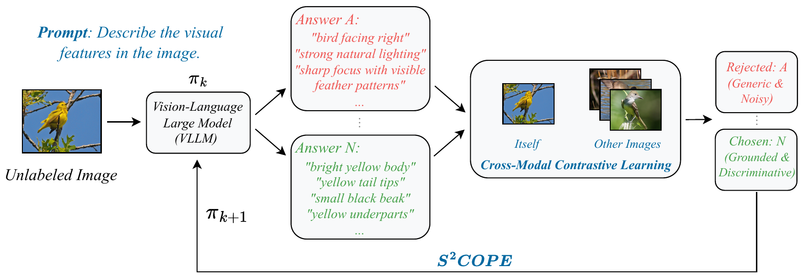
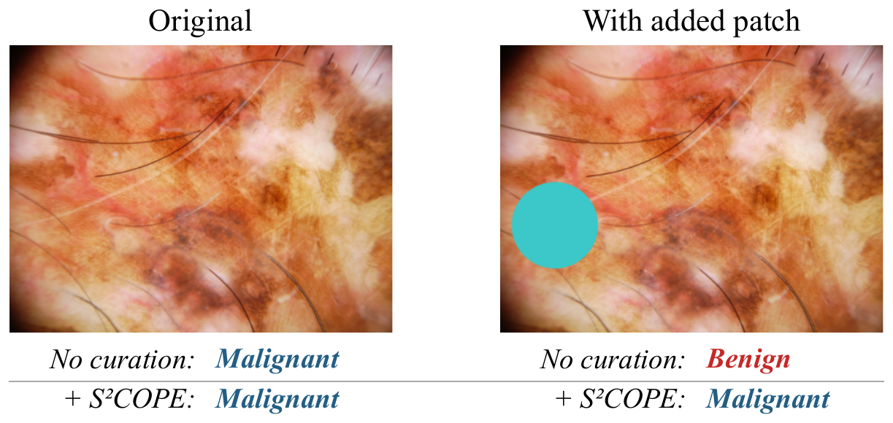
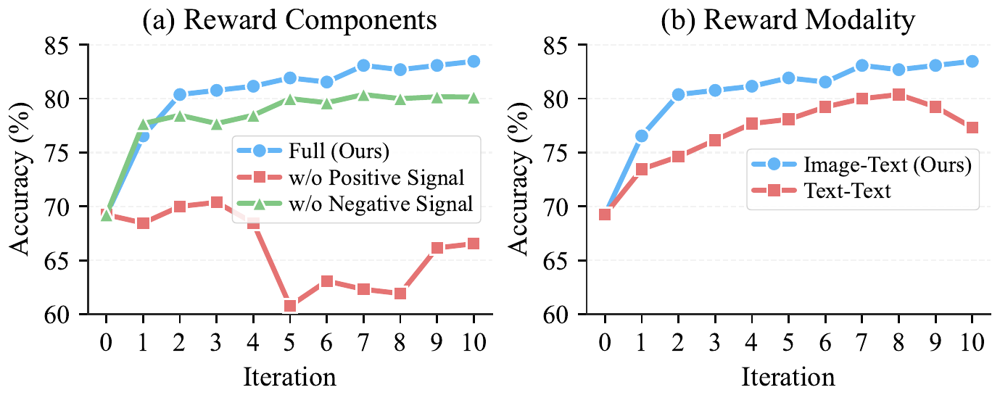

Self-supervised learning can learn useful representations from unlabeled images. Yet these representations remain largely opaque, making it difficult to understand what visual concepts they encode. Can self-supervision instead produce useful visual concepts that are directly understandable to people?
We introduce S²COPE, a framework that represents images as sets of concepts expressed in natural language. A vision-language model proposes candidate concepts, and a self-supervised objective evaluates how well each concept describes the source image while distinguishing it from other images. This feedback is used to construct preferences and train the model to propose better concepts.
Across eight diverse visual datasets, our self-supervised concept representations transfer without adaptation and improve downstream recognition accuracy over prior interpretable approaches. In medical imaging, our discovered concepts reveal spurious visual cues and enable a more robust classifier. These results show that self-supervision can discover useful, human-readable visual representations from unlabeled images.

| Method | Labels | Nature | Physics | Medical | Faces | ||||
|---|---|---|---|---|---|---|---|---|---|
| iNaturalist | CUB | Galaxy10 | Gravity Spy | HAM10000 | OrganCMNIST | OrganMNIST3D | FairFace | ||
| TextSpan | ✓ | 20.00 | 81.08 | 24.07 | 4.25 | 17.10 | 7.40 | 12.42 | 50.95 |
| DCLIP | ✓ | 23.46 | 82.14 | 11.75 | 2.17 | 33.16 | 10.41 | 14.29 | 46.16 |
| LF-CBM | ✓ | 73.85 | 64.55 | 53.44 | 83.08 | 70.98 | 78.85 | 65.22 | 53.47 |
| LaBo | ✓ | 42.69 | 77.63 | 53.55 | 39.50 | 63.73 | 54.10 | 22.36 | 39.99 |
| VLLM (Unoptimized) | ✗ | 71.15 | 74.77 | 54.09 | 60.83 | 65.28 | 68.06 | 58.39 | 50.63 |
| VLLM + S²COPE (Ours) | ✗ | 85.00 (+11.15) | 85.11 (+2.97) | 66.52 (+12.97) | 83.55 (+0.47) | 79.27 (+8.29) | 91.43 (+12.58) | 70.19 (+4.97) | 59.01 (+5.54) |
Table 1 Top-1 Concept-Based Classification Accuracy (%) Across Eight Datasets. S²COPE fine-tunes a VLLM on unlabeled iNaturalist-mini images, which is then transferred to other datasets without adaptation. “Labels” indicates class-label or class-name use in concept construction. Blue values denote percentage-point gains over the best of the four concept-based baselines per dataset. S²COPE outperforms these baselines on all eight datasets, with an average gain of 7.37 percentage points.
| Evaluator | GPT-5.6-Sol | Human | ||||
|---|---|---|---|---|---|---|
| Opponent | Unoptimized VLLM | TextSpan | DCLIP | LF-CBM | LaBo | Unoptimized VLLM |
| S²COPE preference | 85.9 | 98.7 | 96.2 | 89.7 | 98.7 | 96.41 |
Table 2 Pairwise Preference Win Rate for S²COPE Concepts (%). For each opponent, we report the percentage of the 39 images for which the evaluator prefers S²COPE's anonymized concept list over the opponent's. GPT-5.6-Sol compares S²COPE against five baselines, while human evaluators compare S²COPE against the unoptimized VLLM, with results averaged across evaluators.
On ISIC dermoscopy, colored calibration patches are spuriously associated with benign lesions. Without being supplied artifact names or patch annotations, the learned generator produces concepts such as “orange circular marker,” “green circular patch,” and “round sticker-like texture,” exposing the confounder. Filtering the affected training images with these concepts and retraining the linear probe reduces the patch-induced error rate on malignant images from 74.9% to 59.9%.

Figure 4 Concept-Guided Shortcut Mitigation. Adding a patch causes this malignant image to be misclassified as benign. “+ S²COPE” denotes concept-guided data curation and probe retraining, which preserve the correct prediction. S²COPE enables targeted data curation that removes bias in the data.
| Setting | Patch detection (%) | Error rate (%) ↓ | |
|---|---|---|---|
| Precision | Recall | ||
| VLLM (Unoptimized) | — | — | 74.9 |
| VLLM + S²COPE | 95.5 | 83.4 | 59.9 |
Table 3 Concept-Guided Shortcut Mitigation on ISIC. S²COPE identifies affected training images; removing them and retraining the linear probe reduces the patch-induced error rate from 74.9% to 59.9%.

@article{xiang2026scope,
title={S$^2$COPE: Self-Supervised Concept Discovery via Preference Learning},
author={Xiang, Shilong and Zhang, Zirui and Mao, Chengzhi},
journal={arXiv preprint arXiv:2606.14586},
year={2026}
}